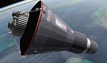

Commander: John Glenn
Duration: 3 orbits
Year: 1962
On February 20, 1962, John H. Glenn, Jr., became the first American to orbit Earth. An Atlas launch vehicle propelled a Mercury spacecraft into Earth orbit and enabled Glenn to circle Earth three times. The flight lasted a total of 4 hours, 55 minutes, and 23 seconds before the Friendship 7 spacecraft splashed down in the ocean. Most major systems worked smoothly, and the flight was a great success as an engineering feat.